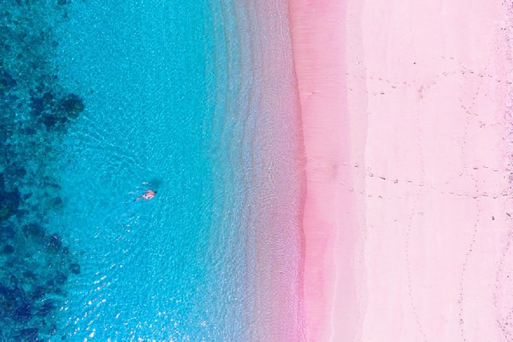

Pink Beach
Pantai Merah (better known as simply Pink Beach) is one of only seven beaches in the world with pink sand. The striking hue is the result of the presence of foraminifera, single-cell organisms that live in the local coral reefs and have a reddish pigment on their shells. Turquoise seas lap at the beach here, where sunbathers mix in with kayakers and hikers exploring the nearby mangrove forests.
White Beach

At just four kilometers long, Boracay Island's White Beach might not be the biggest stretch of sand, but what it lacks in size, this tiny beach more than makes up for in beauty. White Beach is sheltered from the strong winds that are common everywhere else in the island—and as a result, the deep-blue waters are glassy-smooth and perfect for swimming and scuba diving.
Pom Pom Island

Located in the Celebes Sea, the Pom Pom Island has one of the world's highest marine biodiversity. Not only is this tiny island (so small that you can walk the entire island in about an hour) home to over 500 coral species, but it's also the nesting location for hawksbill sea turtles, a critically endangered species.